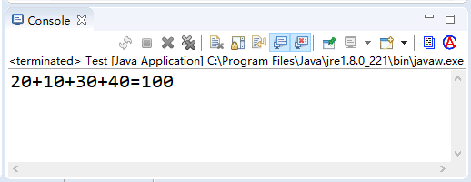
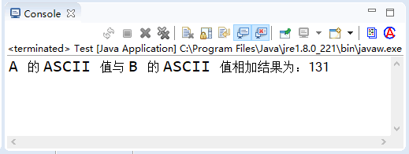

首页 > Java教程 > Java程序设计基础
Java数据类型：基本数据类型和引用数据类型
前面我们提到 Java 语言是强类型语言，编译器存储在变量中的数值具有适当的数据类型。学习任何一种编程语言都要了解其数据类型，本文将详细介绍 Java 中的数据类型。
Java 语言支持的数据类型分为两种：基本数据类型（Primitive Type）和引用数据类型（Reference Type）。
提示：char 代表字符型，实际上字符型也是一种整数类型，相当于无符号整数类型。
所有的基本数据类型的大小（所占用的字节数）都已明确规定，在各种不同的平台上保持不变，这一特性有助于提高 Java 程序的可移植性。
Java 数据类型的结构如图 1 所示。

图 1 Java数据类型结构图
Java 是一种强制类型的语言，所有的变量都必须先明确定义其数据类型，然后才能使用。Java 中所有的变量、表达式和值都必须有自己的类型，没有“无类型”变量这样的概念。
基本数据类型又可分为 4 大类，即整数类型（包括 byte、short，int 和 long）、浮点类型（包括 float 和 double）、布尔类型和字符类型（char），下面分别介绍这 4 大类数据类型。
在该示例中，首先依次定义了 byte 类型、short 类型、int 类型和 long 类型的 4 个变量，并赋予了初始值，然后定义了一个 long 类型、名称为 sum 的变量。sum 变量的值为前 4 个变量之和，最后输出 sum 变量的值，即相加之后的结果。
提示：因为 byte 类型、short 类型、int 类型和 long 类型都是整数类型，故可以使用“+”相加，而非字符串之间的连接。
单精度浮点型（float）和双精度浮点型（double）之间的区别主要是所占用的内存大小不同，float 类型占用 4 字节的内存空间，double 类型占用 8 字节的内存空间。双精度类型 double 比单精度类型 float 具有更高的精度和更大的表示范围。
Java 默认的浮点型为 double，例如，11.11 和 1.2345 都是 double 型数值。如果要说明一个 float 类型数值，就需要在其后追加字母 f 或 F，如 11.11f 和 1.2345F 都是 float 类型的常数。
例如，可以使用如下方式声明 float 类型的变量并赋予初值。
由于路径数据为浮点类型，在这里定义一个类型为 double 的变量来存储单程距离，并定义一个 int 类型的变量来存储次数。另外，因为计算得到的值为 float 类型，所以可以定义一个 float 类型的变量来存储总距离。
代码如下：
保存文件并运行，输出的结果如图 3 所示：

图 3 输出结果
该示例中首先定义了一个类型为 double、名称为 lutu 的变量用于存储单程距离，然后定义了一个类型为 int、名称为 num 的变量用于存储经过的次数，最后定义了一个类型为 float、名称为 total 的变量用于存储总距离。
其实一个 double 类型的数据与一个 int 类型的数据相乘后得到的结果类型为 double，但是由于单程距离乘以次数为一个单精度浮点型（float 类型）的数，因此可以将总距离转换为 float 类型的数据。
在 Java 语言中，布尔类型的值不能转换成任何数据类型，true 常量不等于 1，而 false 常量也不等于 0。这两个值只能赋给声明为 boolean 类型的变量，或者用于布尔运算表达式中。
例如，可以使用以下语句声明 boolean 类型的变量。
一般计算机语言使用 ASCII 编码，用一个字节表示一个字符。ASCII 码是 Unicode 码的一个子集，用 Unicode 表示 ASCII 码时，其高字节为 0，它是其前 255 个字符。
Unicode 字符通常用十六进制表示。例如“\u0000”~“\u00ff”表示 ASCII 码集。“\u”表示转义字符，它用来表示其后 4 个十六进制数字是 Unicode 码。
字符型变量的类型为 char，用来表示单个的字符，例如：
第一条语句将字符 D 赋给字符型变量 letter；第二条语句将数字字符 5 赋给字符型变量 numChar。
在该程序中，a 变量首先被赋值为“A”，字母 A 在 ASCII（和 Unicode）中对应的值为 65。接着又定义了一个类型为 char 的变量 b，赋值为“B”，字母 B 在 ASCII（和 Unicode）中所对应的值为 66。因此相加后得出的结果为 131。
提示：字符通常用 16 进制表示，范围从“\uOOOO”~“\uFFFF”，即从 0~65535。\uOOOO 和 \uFFFF 中的 u 告诉编译器是用两个字节（16 位）字符信息表示一个 Unicode 字符。
引用类型还有一种特殊的 null 类型。所谓引用数据类型就是对一个对象的引用，对象包括实例和数组两种。实际上，引用类型变量就是一个指针，只是 Java 语言里不再使用指针这个说法。
空类型（null type）就是 null 值的类型，这种类型没有名称。因为 null 类型没有名称，所以不可能声明一个 null 类型的变量或者转换到 null 类型。
空引用（null）是 null 类型变量唯一的值。空引用（null）可以转换为任何引用类型。
在实际开发中，程序员可以忽略 null 类型，假定 null 只是引用类型的一个特殊直接量。
注意：空引用（null）只能被转换成引用类型，不能转换成基本类型，因此不要把一个 null 值赋给基本数据类型的变量。
Java 语言支持的数据类型分为两种：基本数据类型（Primitive Type）和引用数据类型（Reference Type）。
Java基本数据类型
基本数据类型包括 boolean（布尔型）、float（单精度浮点型）、char（字符型）、byte（字节型）、short（短整型）、int（整型）、long（长整型）和 double （双精度浮点型）共 8 种，详见表 1 所示。| 类型名称 | 关键字 | 占用内存 | 取值范围 |
|---|---|---|---|
| 字节型 | byte | 1 字节 | -128~127 |
| 短整型 | short | 2 字节 | -32768~32767 |
| 整型 | int | 4 字节 | -2147483648~2147483647 |
| 长整型 | long | 8 字节 | -9223372036854775808L~9223372036854775807L |
| 单精度浮点型 | float | 4 字节 | +/-3.4E+38F（6~7 个有效位） |
| 双精度浮点型 | double | 8 字节 | +/-1.8E+308 (15 个有效位） |
| 字符型 | char | 2 字节 | ISO 单一字符集 |
| 布尔型 | boolean | 1 字节 | true 或 false |
所有的基本数据类型的大小（所占用的字节数）都已明确规定，在各种不同的平台上保持不变，这一特性有助于提高 Java 程序的可移植性。
Java 数据类型的结构如图 1 所示。
图 1 Java数据类型结构图
Java 是一种强制类型的语言，所有的变量都必须先明确定义其数据类型，然后才能使用。Java 中所有的变量、表达式和值都必须有自己的类型，没有“无类型”变量这样的概念。
基本数据类型又可分为 4 大类，即整数类型（包括 byte、short，int 和 long）、浮点类型（包括 float 和 double）、布尔类型和字符类型（char），下面分别介绍这 4 大类数据类型。
1）整数类型
Java 定义了 4 种整数类型变量：字节型（byte）、短整型（short）、整型（int）和长整型（long）。这些都是有符号的值，正数或负数。具体说明表 2 所示：| 名称 | 说明 |
|---|---|
| 字节型（byte） | byte 类型是最小的整数类型。当用户从网络或文件中处理数据流时，或者处理可能与 Java 的其他内置类型不直接兼容的未加工的二进制数据时，该类型非常有用。 |
| 短整型（short） | short 类型限制数据的存储为先高字节，后低字节，这样在某些机器中会出错，因此该类型很少被使用。 |
| 整型（int） | int 类型是最常使用的一种整数类型。 |
| 长整型（long） | 对于大型程序常会遇到很大的整数，当超出 int 类型所表示的范围时就要使用 long 类型。 |
例 1
创建一个 Java 程序，在 main() 方法中声明各种整型的变量并赋予初值，最后将变量相加并输出结果，代码如下：
public static void main(String[] args) {
byte a = 20; // 声明一个byte类型的变量并赋予初始值为20
short b = 10; // 声明一个short类型的变量并赋予初始值为10
int c = 30; // 声明一个int类型的变量并赋予初始值为30
long d = 40; // 声明一个long类型的变量并赋予初始值为40
long sum = a + b + c + d;
System.out.println("20+10+30+40=" + sum);
}
保存该段代码并运行，输出的最终结果如图 2 所示：

图 2 运行结果
图 2 运行结果
在该示例中，首先依次定义了 byte 类型、short 类型、int 类型和 long 类型的 4 个变量，并赋予了初始值，然后定义了一个 long 类型、名称为 sum 的变量。sum 变量的值为前 4 个变量之和，最后输出 sum 变量的值，即相加之后的结果。
提示：因为 byte 类型、short 类型、int 类型和 long 类型都是整数类型，故可以使用“+”相加，而非字符串之间的连接。
2）浮点类型
浮点类型是带有小数部分的数据类型，也叫实型。浮点型数据包括单精度浮点型（float）和双精度浮点型（double），代表有小数精度要求的数字。单精度浮点型（float）和双精度浮点型（double）之间的区别主要是所占用的内存大小不同，float 类型占用 4 字节的内存空间，double 类型占用 8 字节的内存空间。双精度类型 double 比单精度类型 float 具有更高的精度和更大的表示范围。
Java 默认的浮点型为 double，例如，11.11 和 1.2345 都是 double 型数值。如果要说明一个 float 类型数值，就需要在其后追加字母 f 或 F，如 11.11f 和 1.2345F 都是 float 类型的常数。
例如，可以使用如下方式声明 float 类型的变量并赋予初值。
float price = 12.2f; // 定义float类型并赋予初值
也可以使用如下的任意一种方式声明 double 类型的变量并赋予初值。double price = 12.254d; // 定义double类型的变量并赋予初值
或double price = 12.254; // 定义double类型的变量并赋予初值
注意：一个值要能被真正看作 float，它必须以 f（或 F）后缓结束；否则，会被当作 double 值。对 double 值来说，d（或 D）后缓是可选的。例 2
假设从 A 地到 B 地路程为 2348.4 米，那么往返 A 和 B 两地需要走多少米？由于路径数据为浮点类型，在这里定义一个类型为 double 的变量来存储单程距离，并定义一个 int 类型的变量来存储次数。另外，因为计算得到的值为 float 类型，所以可以定义一个 float 类型的变量来存储总距离。
代码如下：
public static void main(String[] args) {
double lutu = 2348.4; // 定义 double 类型的变量，用于存储单程距离
int num = 2; // 定义 int 类型的变量，用于存储次数
float total = (float) (lutu * 2); // 定义 float 类型的变量，用于存储总距离
System.out.println("往返 AB 两地共需要行驶：" + total + " 米");
}
保存文件并运行，输出的结果如图 3 所示：
图 3 输出结果
该示例中首先定义了一个类型为 double、名称为 lutu 的变量用于存储单程距离，然后定义了一个类型为 int、名称为 num 的变量用于存储经过的次数，最后定义了一个类型为 float、名称为 total 的变量用于存储总距离。
其实一个 double 类型的数据与一个 int 类型的数据相乘后得到的结果类型为 double，但是由于单程距离乘以次数为一个单精度浮点型（float 类型）的数，因此可以将总距离转换为 float 类型的数据。
3）布尔类型
布尔类型（boolean）用于对两个数值通过逻辑运算，判断结果是“真”还是“假”。Java 中用保留字 true 和 false 来代表逻辑运算中的“真”和“假”。因此，一个 boolean 类型的变量或表达式只能是取 true 和 false 这两个值中的一个。在 Java 语言中，布尔类型的值不能转换成任何数据类型，true 常量不等于 1，而 false 常量也不等于 0。这两个值只能赋给声明为 boolean 类型的变量，或者用于布尔运算表达式中。
例如，可以使用以下语句声明 boolean 类型的变量。
boolean isable; // 声明 boolean 类型的变量 isable boolean b = false; // 声明 boolean 类型的变量 b，并赋予初值为 false
4）字符类型
Java 语言中的字符类型（char）使用两个字节的 Unicode 编码表示，它支持世界上所有语言，可以使用单引号字符或者整数对 char 型赋值。一般计算机语言使用 ASCII 编码，用一个字节表示一个字符。ASCII 码是 Unicode 码的一个子集，用 Unicode 表示 ASCII 码时，其高字节为 0，它是其前 255 个字符。
Unicode 字符通常用十六进制表示。例如“\u0000”~“\u00ff”表示 ASCII 码集。“\u”表示转义字符，它用来表示其后 4 个十六进制数字是 Unicode 码。
字符型变量的类型为 char，用来表示单个的字符，例如：
char letter = 'D'; char numChar = '5';
第一条语句将字符 D 赋给字符型变量 letter；第二条语句将数字字符 5 赋给字符型变量 numChar。
例 3
下面代码在 main() 方法中定义两个字符类型的变量，并使之相对应的 ASCII（Unicode）值相加，最后将相加后的结果输出。
public static void main(String[] args) {
char a = 'A'; // 向 char 类型的 a 变量赋值为 A，所对应的 ASCII 值为 65
char b = 'B'; // 向 char 类型的 b 变量赋值为 B，所对应的 ASCII 值为 66
System.out.println("A 的 ASCII 值与 B 的 ASCII 值相加结果为："+(a+b));
}
保存该段代码并运行，输出结果如图 4 所示。

图 4 输出结果
图 4 输出结果
在该程序中，a 变量首先被赋值为“A”，字母 A 在 ASCII（和 Unicode）中对应的值为 65。接着又定义了一个类型为 char 的变量 b，赋值为“B”，字母 B 在 ASCII（和 Unicode）中所对应的值为 66。因此相加后得出的结果为 131。
提示：字符通常用 16 进制表示，范围从“\uOOOO”~“\uFFFF”，即从 0~65535。\uOOOO 和 \uFFFF 中的 u 告诉编译器是用两个字节（16 位）字符信息表示一个 Unicode 字符。
Java引用数据类型
引用数据类型建立在基本数据类型的基础上，包括数组、类和接口。引用数据类型是由用户自定义，用来限制其他数据的类型。另外，Java 语言中不支持 C++ 中的指针类型、结构类型、联合类型和枚举类型。引用类型还有一种特殊的 null 类型。所谓引用数据类型就是对一个对象的引用，对象包括实例和数组两种。实际上，引用类型变量就是一个指针，只是 Java 语言里不再使用指针这个说法。
空类型（null type）就是 null 值的类型，这种类型没有名称。因为 null 类型没有名称，所以不可能声明一个 null 类型的变量或者转换到 null 类型。
空引用（null）是 null 类型变量唯一的值。空引用（null）可以转换为任何引用类型。
在实际开发中，程序员可以忽略 null 类型，假定 null 只是引用类型的一个特殊直接量。
注意：空引用（null）只能被转换成引用类型，不能转换成基本类型，因此不要把一个 null 值赋给基本数据类型的变量。
关注公众号「站长严长生」，在手机上阅读所有教程，随时随地都能学习。内含一款搜索神器，免费下载全网书籍和视频。

微信扫码关注公众号